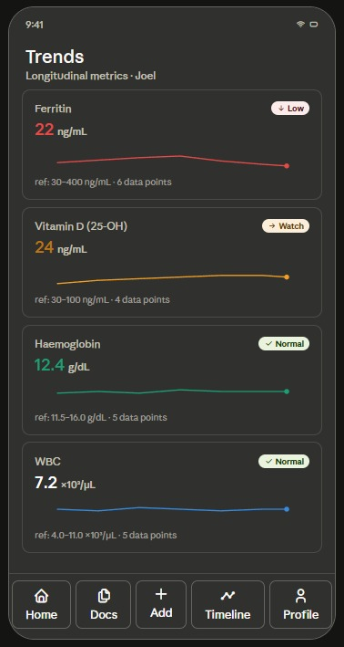

Reports are scattered
Lab results often live across email, paper folders, PDFs, hospital portals, and phone galleries.
About Klario
Klario helps people organize medical reports, track biomarker changes, and understand what their records are saying over time — without comparing every line by hand.

Klario is being built for people who want a clearer view of their health records without needing to manually compare every report line by line.
The product brings report storage, parsing, timelines, family profiles, and understandable insights into one app — designed for everyday tracking, not clinical complexity.
The idea came from a cofounder trying to find the exact moment an aging parent's blood sugar started spiking.
That meant sorting through hundreds of blood tests and trying to remember small details that could have major consequences. Klario was created so that kind of answer can be found with a chart, a timeline, and the right context — not a weekend of spreadsheet work.
The challenge
Most people can read a single lab report. What breaks down is keeping years of results organized, comparable, and understandable — especially across a family.
Lab results often live across email, paper folders, PDFs, hospital portals, and phone galleries.
A single result is easy to read. A pattern across years of tests is much harder to remember or compare manually.
People often manage records for parents, children, partners, and pets, but those records rarely live together.
Reports can explain what a value is, but not always what it means in plain language for everyday tracking.
Klario lets users upload medical reports, extracts the key values, plots them over time, and gives understandable explanations so users can see what changed and when.
It is built for personal tracking and family organization. Klario is educational and organizational support — not a replacement for professional medical advice.